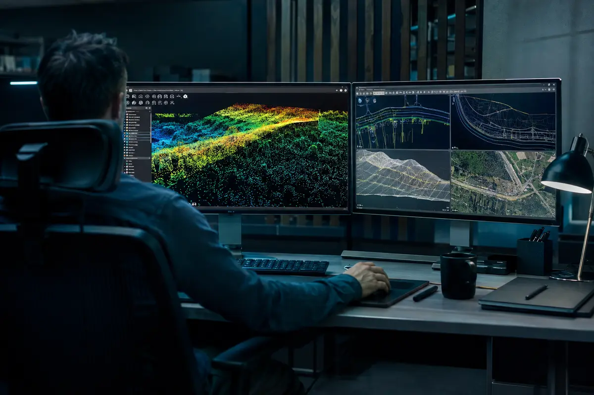

PRODUCTION-FIRST
LiDAR, Point Clouds & Surfaces
Classification, cleanup, registration, QA/QC, terrain models, contours and production-ready files.

SAN ANTONIO • TEXAS • REMOTE PRODUCTION + FIELD SUPPORT
LiDAR, photogrammetry, point clouds, aerial imaging, scanning, GIS and CAD production for teams that need dependable geospatial output—without increasing permanent staff.

CORE CAPABILITIES
Bring Wise a defined work package, a sample dataset or a production backlog. We can support capture through delivery—or step in wherever your internal workflow needs capacity.
PRODUCTION-FIRST
Classification, cleanup, registration, QA/QC, terrain models, contours and production-ready files.

FIELD + PROCESSING
Orthomosaics, aerial documentation, 3D models, progress comparisons and earthwork or inventory support.

EXISTING CONDITIONS
Repeatable capture, scan organization, registration support and model-ready existing-condition datasets.

ORGANIZE + DELIVER
Asset inventories, spatial databases, corridor mapping, drafting, conversion and technical deliverables.

SELECTED APPLICATIONS
Representative demonstrations of the information Wise can produce from imagery, LiDAR, thermal data and field capture.
 DEMONSTRATION VISUALIZATION
DEMONSTRATION VISUALIZATIONCONSTRUCTION + MATERIALS
Track grading, quantities, stockpiles and site change with repeatable aerial data.
ORTHOMOSAIC • CONTOURS • VOLUMES
 DEMONSTRATION VISUALIZATION
DEMONSTRATION VISUALIZATIONENERGY + INFRASTRUCTURE
Organize imagery, terrain and GIS features for access, crossings and field coordination.
CORRIDOR MOSAIC • GIS • TERRAIN
 DEMONSTRATION VISUALIZATION
DEMONSTRATION VISUALIZATIONTHERMAL + BUILDING DATA
Make temperature patterns, rooftop assets and follow-up areas easier to communicate.
THERMAL • ANNOTATION • LOCATION MAP
WHERE WE FIT
Project-based production capacity for teams that need a measurable output—not another layer of staffing.
Quantities, grading progress and closeout documentation.
VOLUMES • SURFACES • PROGRESSROW, facility, terrain and remote-sensing production.
CORRIDORS • ACQUISITIONS • ASSETSView energy services →Overflow LiDAR, photogrammetry, CAD, GIS and QA/QC.
OVERFLOW • QA/QC • PRODUCTIONStockpile inventory, surface change and reconciliation.
INVENTORY • CHANGE • VOLUMESListing media, existing conditions, acreage context and immersive documentation.
AERIAL • WALKTHROUGH • 3DView property services →Repeatable visual, aerial and thermal documentation for project teams.
ROOFS • THERMAL • DOCUMENTATIONView documentation services →HOW WE WORK
What must be measured, documented or delivered?
Use existing data or define new field capture.
Match your formats, naming, QA and schedule.
ABOUT WISE GEOSPATIAL
Wise Geospatial is a San Antonio-based technical services company combining hands-on survey technology, UAS operations and spatial-data production experience.
START A PROJECT
Raw LiDAR? A property that needs documented? Thermal imagery that needs organized? A production backlog? Give us the basics and we’ll identify the cleanest deliverable.